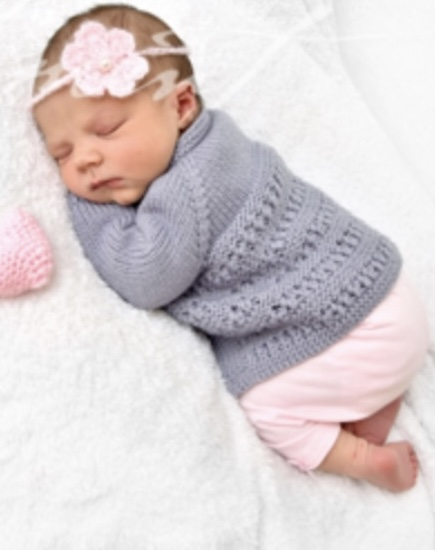
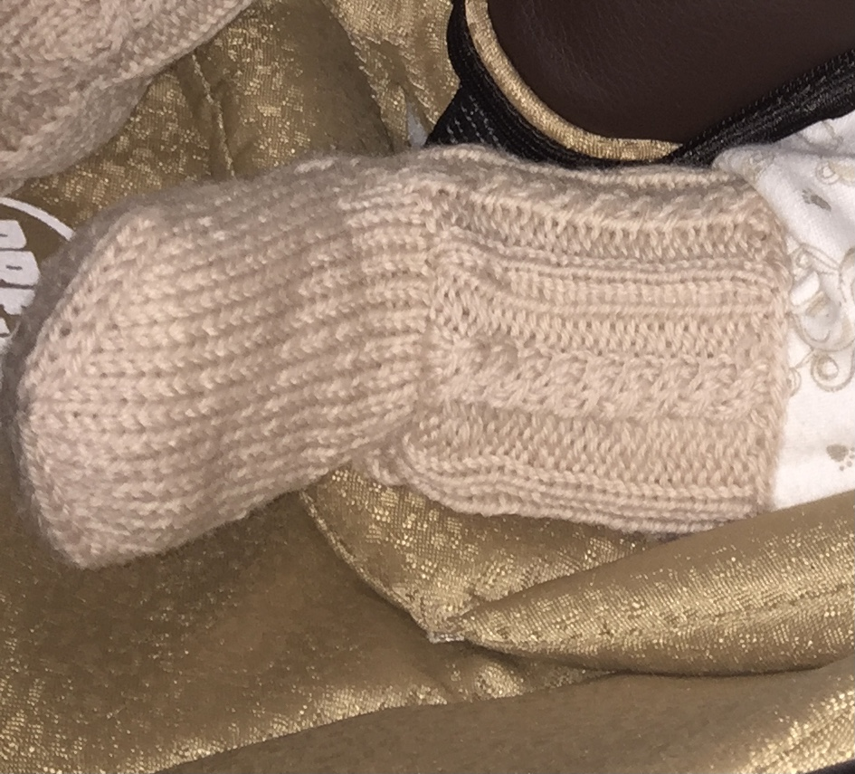

My Knitting Gallery
In this gallery you can find few of my latest creations. Patterns and descriptions of the projects will be available really soon.
I didn’t think of starting my own page at first, so everything that I knitted and gave as presents was not photographed. I knitted dozens of Baby clothes and Sets for my friends that were expecting and gave them as a Baby shower gift. Also Christmas socks for family members, winter mittens, gloves and socks for close relatives, sweaters and hats for myself and my mom, scarfs, cardigans, dresses and many more. Here you can find projects that I did recently. If you are interested in any of them and can’t wait for the instructions to show up, you can contact me and discuss the details. All sizes are adjustable according to the need.
Click pictures to see them full size.
Crochet Pink Baby Dress
This was one of the first projects I did for my own daughter. She wore it from the age of 6 to 9 months. This one is actually a crochet pattern, which mostly includes shell stitch. It was easy and fun to do.
Soft Lavander Baby Sweater
This is a knitted sweater that is supposed to provide comfort and warmth. This particular one in the photo is made for a newborn and up to about 3-4 months. I used a very soft bulky yarn intended especially for Babies. It was quick to do and pleasing to touch.
Peachy Crochet Baby Sweater and Booties Set
Made this one especially just for photos. But it is possible to adjust the sleeves to full size instead just ¾ and add some buttons to make it a wearable piece. Made for a newborn up to 3 month old baby from a dyed, changing color, soft cotton yarn.
Lily-Pink Toddler Cardigan with Bear Ears


This is a crochet piece, made of three separate basic parts: body, sleeves and hoodie. I also added some finishing on the edges. It is for a 1-2 year old toddler. But really easily adjustable. My kid is 2,5 and I just recently prolonged the sleeves and she is good to go again! Highly recommended and easy pattern.
Peach-orange Toddler Scarf with a Button
A little bit more complicated pattern, but fun to do once you get the hang of it. It is reversible, so if you get tired of one side, you can use another. I added a bar with a button, just because I like this clean finish and not like a tied scarf - it doesn't get bulky. This one suits every age, just depends on how long you make it.
Eggshell Baby Sweater and Booties Set
Great example how knit and purl stitches can be enough for a cute project. Sweater is made using Garter stitch for the body, Rib stitch for the openings and some extra finishing for the booties. It is the size of a 3 to 6 month old baby. Made from Merino wool and cotton yarn for the Rib stitch.
Knitted Baby Sweaters
Just a few examples of the sweaters that I've made. All of these were made in the size of 3 to 6 months. All knitted with the cable needles. First one was the most challenging, not because of the stitch itself, but because of the color pattern. Second and third are the examples of a repeated Cable stitch.
Baby Hats, Socks and Sets
Baby Sets is the most common Baby shower gift requested. It can include a hat and socks, hat and mittens, hat, socks and a sweater and many more variations of items mentioned before. These are just a few examples of sets. All done in knitting, all vary in size and material. More specifics will be suggested in separate patterns later.
My Current Projects


I am currently occupied with these projects. All of them are my own creations inspired by common patterns seen online. All have different pieces that need to be put together, which makes them a little more challenging to do.